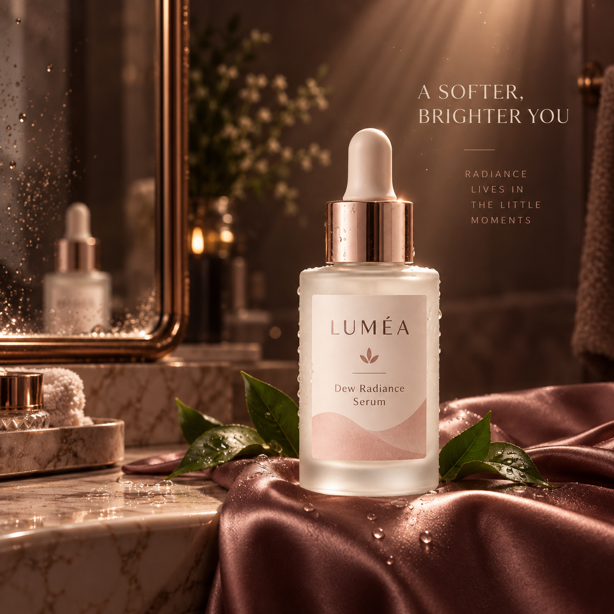
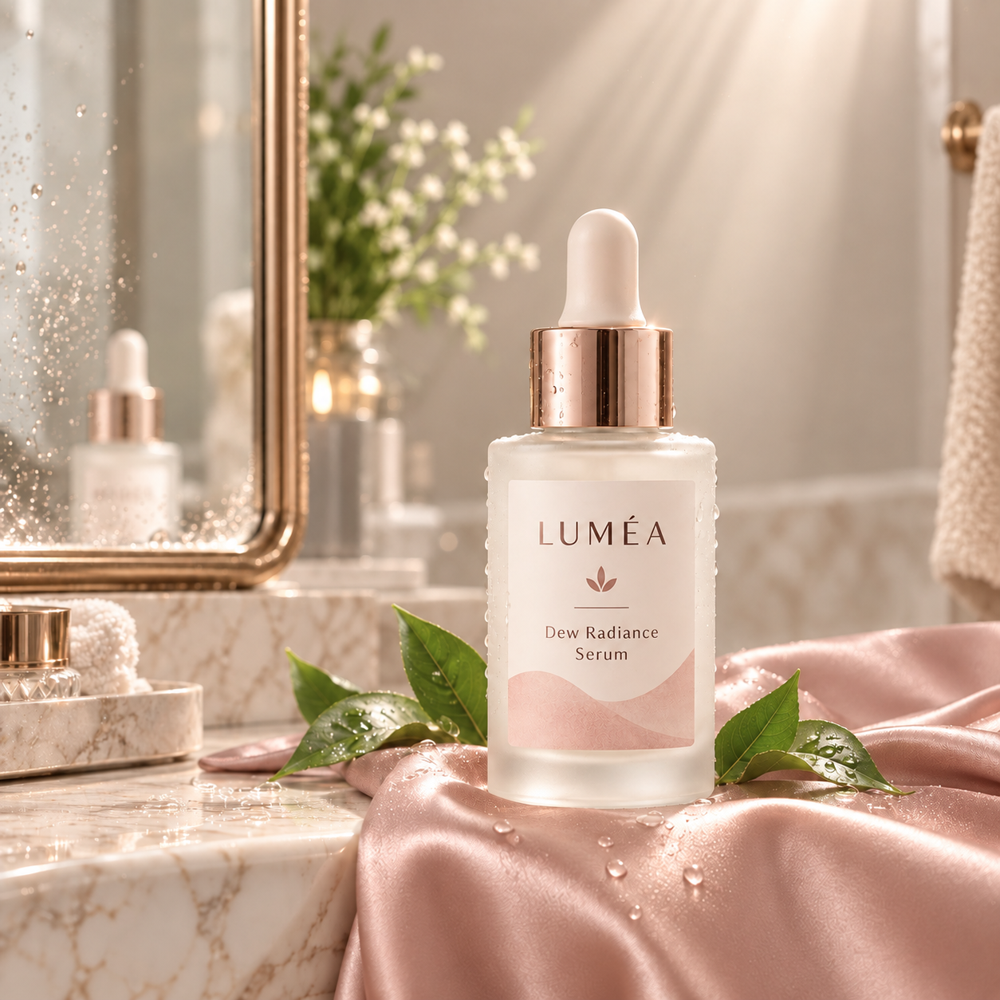
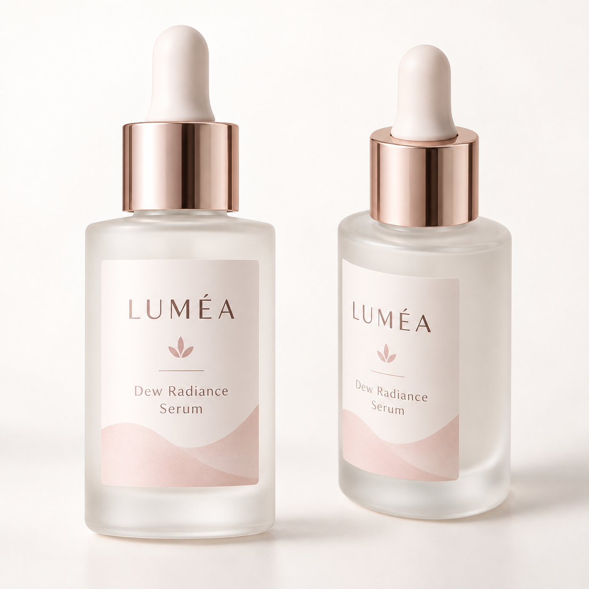
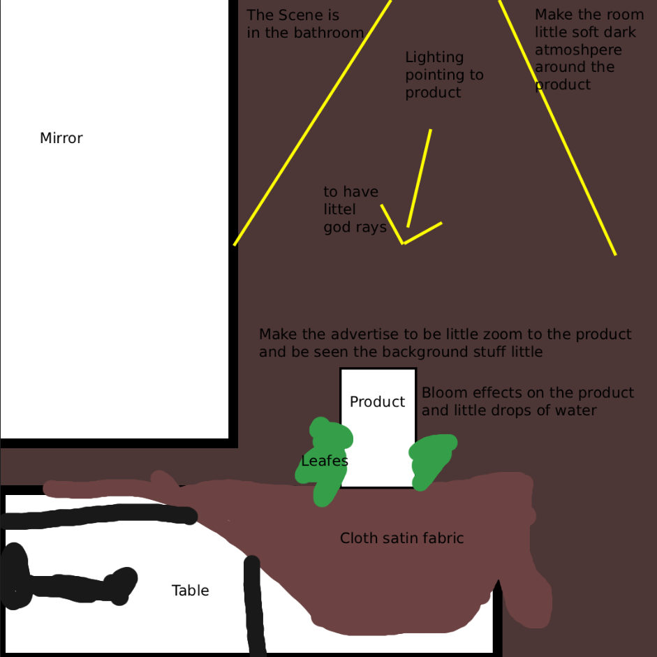

Test 01 — Luxury Mood
The first version communicated softness, but the darker palette pushed the image too far toward luxury. The direction was changed to lighter and cleaner tones to better express freshness and hydration.
A skincare concept designed to communicate freshness, softness and hydration through bright tones, diffused light and a clean visual atmosphere.

The final visual moves away from heavy luxury and toward a brighter, softer skincare mood. Light tones, water droplets and gentle materials reinforce the idea of freshness and hydration.
The goal was to make the product feel fresh, soft and hydrating rather than dark, dramatic or overly luxurious.
Soft daylight, pale surfaces, water and delicate materials were used to create a clean atmosphere that better supports a hydration-focused skincare product.
The product reference was used as the visual anchor while developing a softer environment and a more deliberate composition around it.


The first version communicated softness, but the darker palette pushed the image too far toward luxury. The direction was changed to lighter and cleaner tones to better express freshness and hydration.

I used a rough sketch to plan the product placement, lighting and supporting elements before generation. It helped me turn the scene I had in mind into a clearer visual structure and guide the AI more precisely instead of relying on a random composition.
The sketch is intentionally rough. Its purpose is not to be a finished drawing, but a planning tool. It gives me more human control over the scene, helps reduce repeated prompt-only corrections and makes it easier to communicate the composition I want before generating the final image.
The final image uses a brighter palette, softer lighting and cleaner materials to shift the mood from luxury toward softness and freshness. The result better supports the intended feeling of hydration while keeping the product presentation polished.